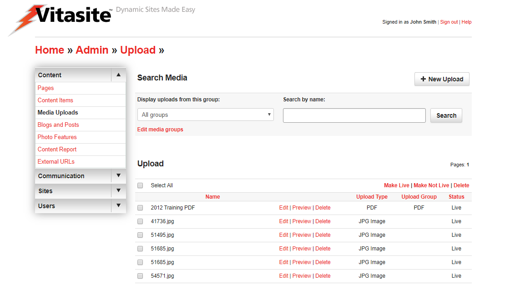
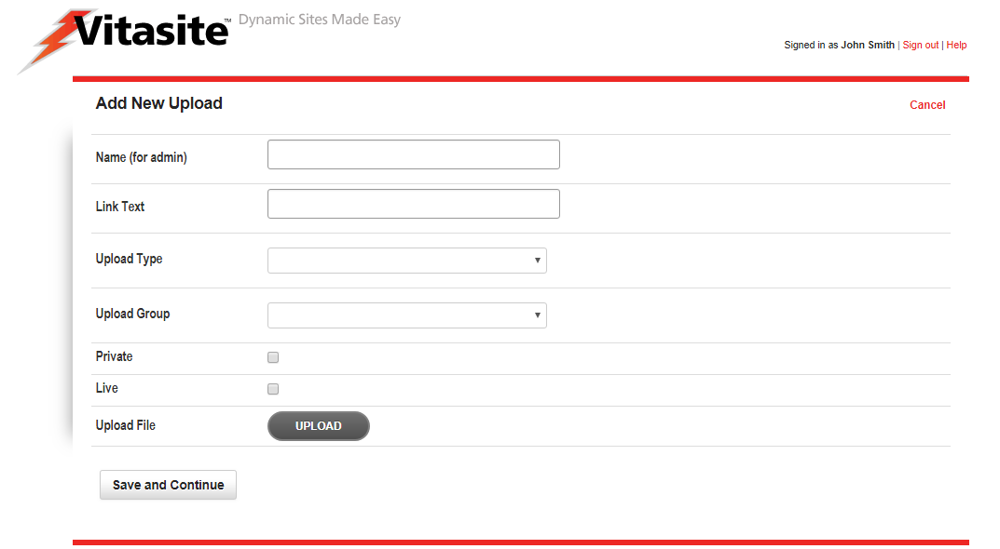
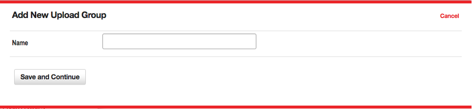

Media Items
The Media Uploads tool is used to move various types of files from your local hard drive to the server hosting your web site, so that those files can be made available for use in content items and on pages. The Media Uploads tool allows you to upload image files, text documents, PDF files, streaming audio or video files, and other document types.
Creating Media Uploads
To upload a Media Item, go to the Media Uploads tool by clicking “Media Uploads” in the left navigation bar of any administrative web page. An image of the main Media Uploads page is shown in Figure 1.
 Figure 1
The top section of the main Media Uploads page allows you to upload a new item, using the following information:
- Name (for Admin) – This name identifies the media item once you upload it.
- Text to Display When Creating Links to Media – This field is used in only certain specific cases, where you need to insert a link to the item instead of inserting the item itself. In this case, this text is used as the hyperlink text. You can usually leave this field blank.
- File Type – Select the type of media file you are uploading.
- Media Group – Select the media group with which you want this file to be associated. You can create and edit media groups by using the “Edit Media Groups” link next to this menu.
- File – Click the “Browse” button to find the file on your local hard drive that you to want to upload. Once you have selected a file, this field will show the path to that file.
Once you have completed the necessary fields, click the “Upload” button to begin the process of transferring the media file to the server. This process may take several minutes, depending on the size of the file and your connection speed to the Internet.
If the file takes too long to upload (typically more than five minutes), you will receive a timeout error. In this case, you can try to upload your file again after decreasing the file size, or by using a faster Internet connection. A timeout error usually indicates that a media file is much too large to be used reliably over the Internet. However, in certain cases you may need to upload a large file. In these cases, you can request that your network administrator upload the file for you.
The lower part of the Media Uploads page shows items you have already uploaded. Each item has a check box next to that allows you to perform specific actions. These actions are listed in the “Action” drop down menu at the start of the listing. The only action that currently applies to media items is the Delete action.
Media Groups
As with all groups, Media Groups shown in Figure 2, allow for an admin to organize their site's media uploads into specific "folders." Media groups can also be used to organize content for use in Media Filters.
 Figure 2
The options within a media group set up are outlined below:
- Name - The name given to the specific Media Group.
Media Filters
Media Filters are a powerful way of manipulating uploded items, so that a page is updated automatically every time a new item is created. If this if the first time you are setting up a filter, you might want to read the general concepts that apply to all filters within VitaSite. The following steps show how to insert a media filter onto a page:
Filters Step One
From the edit window for a page, click on a 'Add Item' insertion button to launch the page insertion wizard. This will open a new dialog window, with the first set of options.
Choose “Media Filter” from the list in the page insertion wizard.
Filters Step Two
 Figure 3
This step shows two panes as seen in Figure 3.
- Select the groups to filter - In the left pane, select the group(s) you want to pull items from by placing a checkmark next to the group name.
- Max items to display per page - In the right pane, enter the number of items that you want to display.
- Hide dates - Choose whether or not to show the item's date.
- Filter Heading - The headline you want to display over this filter on the page.
Once you have done this, click “Add Upload Filter.”
Filters Step Three
The page insertion dialog closes, and the filter you created is added to the edit window. This filter will NOT appear on the site until you click either the “Save” or the “Save and Close” button at the top of the edit window.
Now, all you have to do to update the media displayed in the filter is add a new media item to one of the groups you selected to pull from for this filter. As soon as you save the media item, it shows up at the top of the filter and the oldest item disappears from the bottom of the filter.